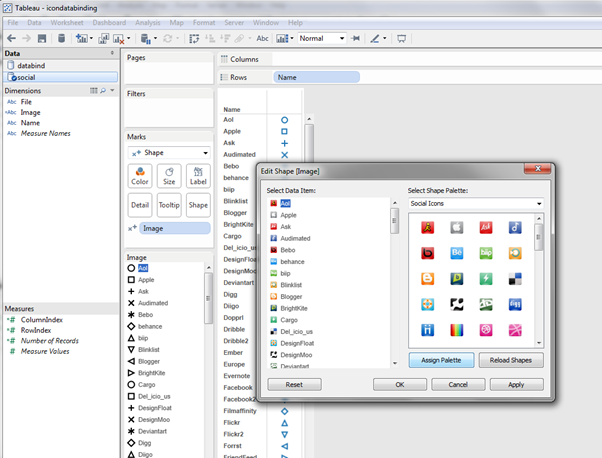
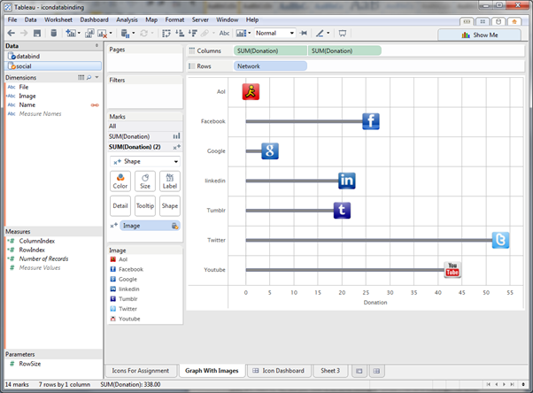
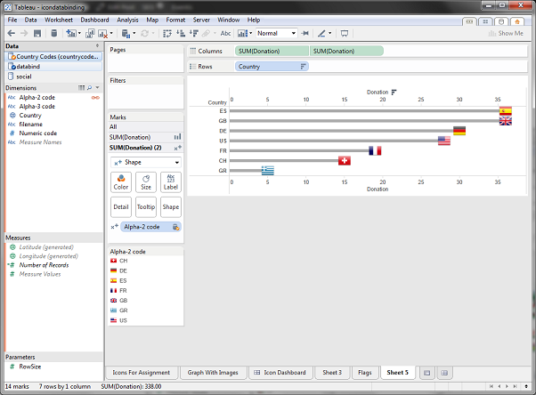

Using Tableau Bookmarks to assign Custom Shapes more easily
Tableau allows you to create sets of custom shapes but assigning these can sometimes be painful, especially if you have a large list of icons to choose from. Wouldn’t it be good if you could get Tableau to look up an icon based on the contents of your data? That’s what I thought, and this morning I note that tableau think that too . Admittedly in their case they are discussing a completely automated solution, but I couldn’t wait so I’ve put together an example showing you how something similar to this can be done using a bit of careful planning and tableau bookmarks. You’ll end up with a quick way to load in a complete resource of icons and then use the correct shapes by linking that resource to your primary dataset.
Why would you do this?
Bookmarks are really good for reusing assets, so if there’s a set of icons that you like using but you don’t always need all of them, then this is a good fit for you. The examples I’m going to use are social network icons and flags. In these cases I can download a large or complete set of resources from somewhere, but in all likelihood my data is going to only access a smaller subset of this data which means the “Assign Shapes” option isn’t going to work and picking through to get the right shapes would be time consuming (or even impossible if you didn’t know what the icon you needed looked like – could you recognise the flag of Burundi from a 16×16 icon preview?)
How to do it
The key here is that just adding your custom icon set to Tableaus Shapes repository isn’t enough, we need a dataset to go with it. We are going to utilise two features/behaviours of tableau:
- When you load custom shapes into tableau, they are listed alphabetically AND they are assigned alphabetically too.
- When a piece of data has been assigned a shape/colour once, if you re-use that field elsewhere in the workbook tableau will try to use the same shape/colour.
The first thing we need to do is get a set of icons and prepare a dataset that tells us the filename and any other information about the data row that we might need. I’m going to use two examples showing social network icons and country flags.
- Put all the icons in a folder in the Shapes subfolder of your Tableau repository. (Tableau does a case sensitive sort whereas windows explorer may not, so I’d advise you to make sure that all your files are consistently cased. I wrote a command line batch script to do this)
- Create a spreadsheet or text file that lists all of the file names. (One way you can do this is by doing a directory listing to a text file from the command line e.g. dir *.* > list.txt and then editing that file in excel)
- Now create a workbook that connects to this data source and create a view by taking the name of the file and positioning it on the Rows shelf. Change the Marks type to “Shape”. I personally think it’s probably better to create a calculated field called “Image” and just return the underlying field that you want to use to match to the shapes – in this case the filename.
- On the card that shows all the shapes next to the name double click one item to edit the shapes. Navigate to your folder and click assign palette. As the order of the names matches the order of the filenames then they should match up perfectly. If they don’t check the case of your filename as tableau does a case-sensitive sort when loading the icons, but doesn’t when creating the view.
- Now save this view as a bookmark called “Social Icons”. Click Window > Bookmarks > Create Bookmark…

Now that we’ve saved it as a bookmark, whenever we have data that contains a column for social network, we can import this sheet quickly and assign the correct icons automatically (via a data relationship) rather than hunting through the lists and assigning them manually. I’ve created a simple table of data that shows users donating money based on a referral from a social network.
| Name | Network | Donation | Date | Country |
| Dave | 5 | 01/12/2013 | GB | |
| Rich | 8 | 05/12/2013 | GB | |
| Andrew | 2 | 13/12/2013 | US | |
| Katherine | Aol | 1 | 02/12/2013 | GB |
| Martha | Youtube | 19 | 01/12/2013 | FR |
| Pete | 2 | 02/12/2013 | US | |
| Mary | 3 | 07/12/2013 | GB | |
| David | 8 | 13/12/2013 | US | |
| Arthur | Youtube | 24 | 15/12/2013 | ES |
| Chris | 2 | 18/12/2013 | GB | |
| Andy | 10 | 14/12/2013 | DE | |
| Stuart | 7 | 04/12/2013 | GB | |
| Natasha | 3 | 02/12/2013 | US | |
| Wendy | Tumblr | 20 | 06/12/2013 | DE |
| Simon | 13 | 16/12/2013 | US | |
| Alan | 10 | 09/12/2013 | GB | |
| Dmitri | 5 | 10/12/2013 | GR | |
| Juan | 12 | 01/12/2013 | ES | |
| Martha | 15 | 11/12/2013 | CH |
- Create a new tableau workbook by connecting to the data
- Create a view that shows a bar and a shape summing money spent by network
- Import your social icons bookmark. Window > Bookmarks > Social Icons
- Click Data > Edit Relationships and link the Network column to the Name column
- On your view drag Image from your secondary datasource onto Shape
- Note that the correct icons are assigned to the social network and that the Shape key has an orange tick by it indicating it is from the sheet you imported as a bookmark.

In the case of the flags dataset I’ve also created extra columns for name and ISO code. Note that if you are having problems with case and wording etc. and you can’t edit the data at source, you can use Aliases or calculated fields that correct the errors and join using those. When I did the It’s also worth noting that the bookmark only contains a reference to the icons path, so you need to have the bookmarks and the shapes installed on the computer you’re using, you can’t just copy the bookmark to another computer and get the correct icons. (although when you package the workbook up you’ll be OK because it will embed the shapes).

Hope you like the post! Leave me a comment if you’ve got any questions or just general praise (it’s one of my first posts and I need the love). And if you want some homework, I’ve also done this for colours by generating a list of hexadecimal colour values into excel and the tableau preferences file so see if you can do that too, you can use Darren Evans post on this blog to help you with custom colour palettes.
Resources:
Lots of places provide social network icons, but be kind and check the licensing. When writing this article I got some nice icons from social shift http://www.instantshift.com/2010/12/07/socialshift-icon-set-246-free-social-networking-icons/
The flag Icons I used were from the rather magnificent http://famfamfam.com/lab/icons/flags/ (they are listed by ISO, but you need to do some editing as Tunisia’s filename is wrongly marked as rn.png and not tn.png and the Dutch Antilles an.png is included which wasn’t in my list of ISO Codes which can be found here http://en.wikipedia.org/wiki/ISO_3166-1)


Posted in: Blog
Leave a Comment (0) → English
English